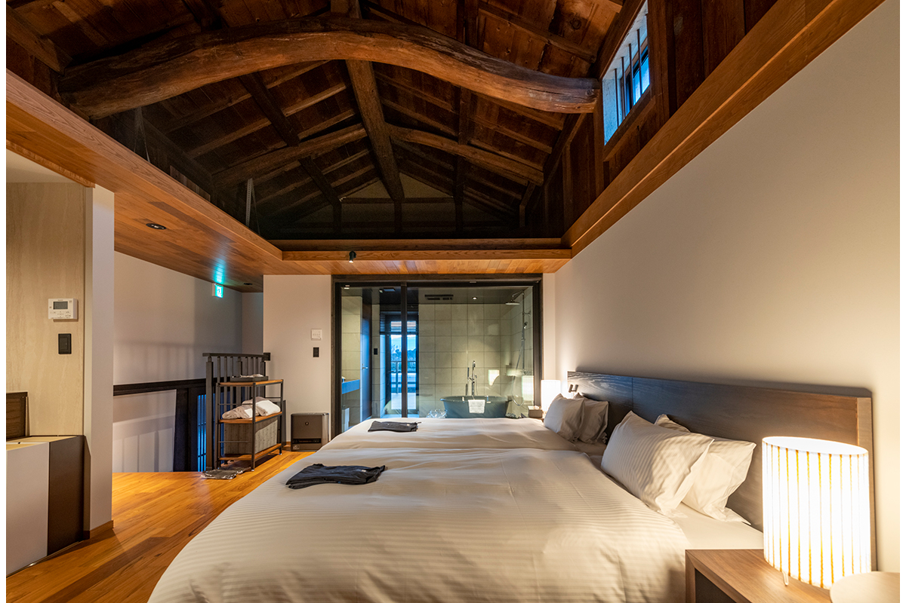
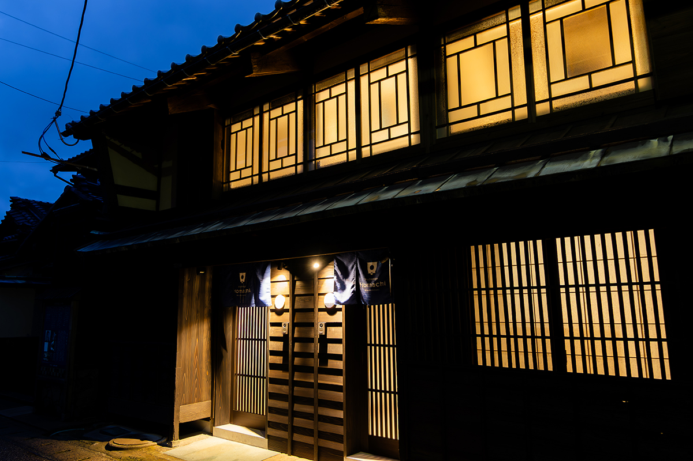
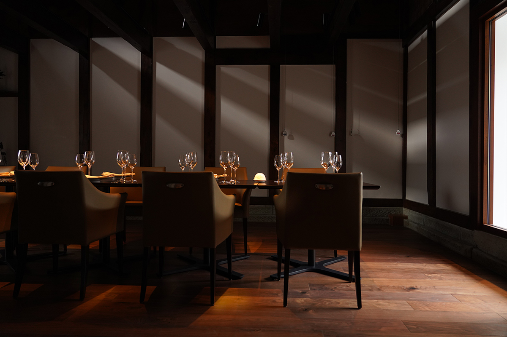
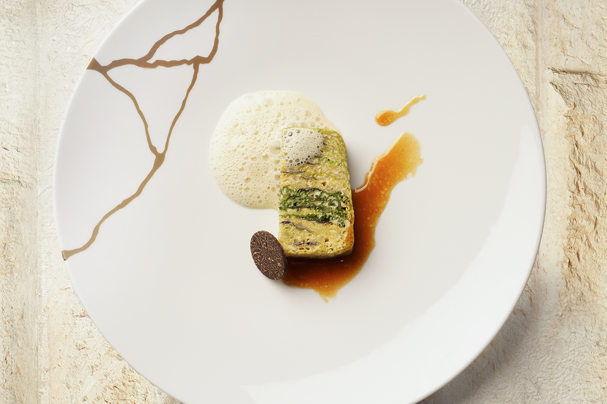
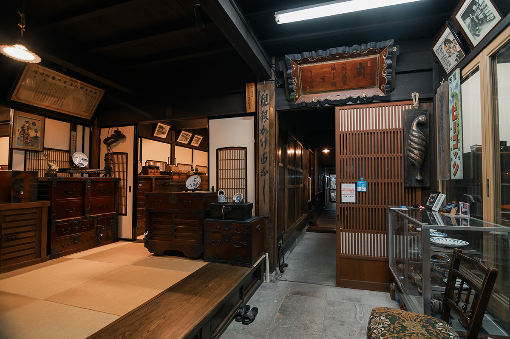
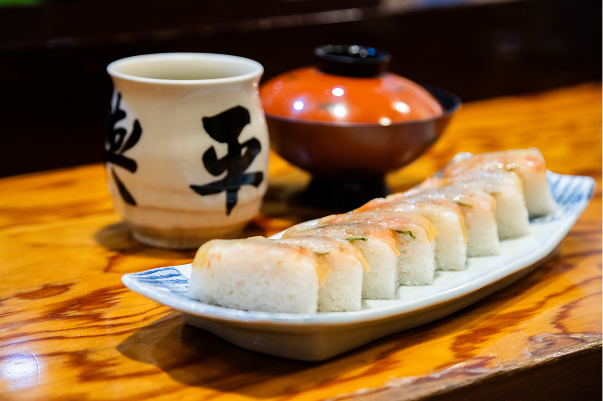
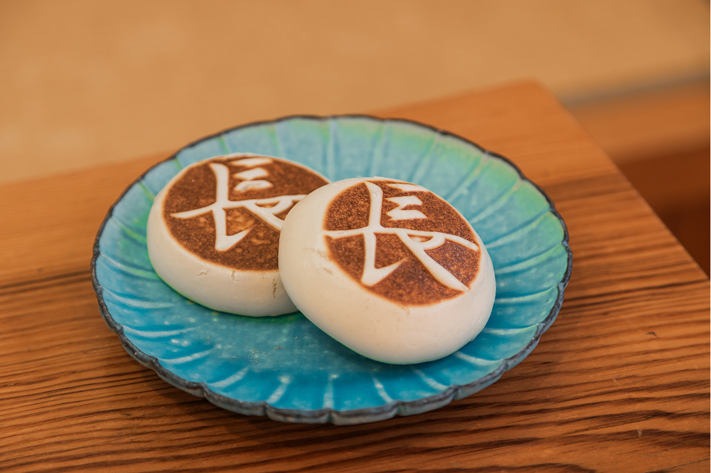
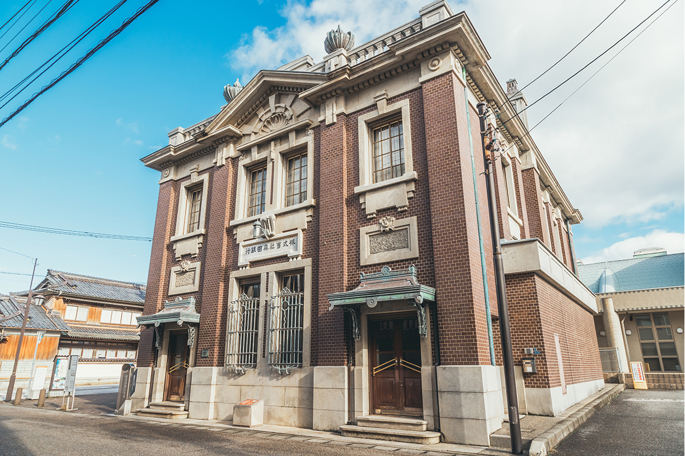
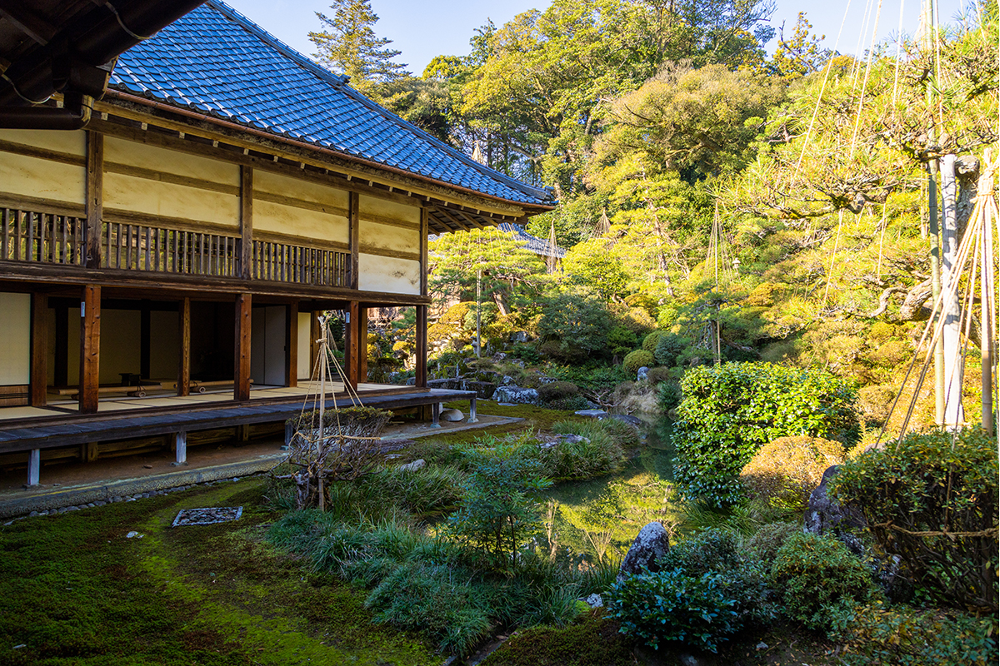

Префектура Фукуи · Сакаи, Микуни · где остановиться
Auberge Homachi Mikuniminato: ночь в старом купеческом доме порта китамаэбунэ

Микуни-минато, порт в устье реки Кудзурю, разбогател на торговых кораблях китамаэбунэ. В январе 2024 года его старые купеческие дома превратились в один отель, номера которого разбросаны по всему кварталу.
Порт
Город, который построили корабли
Линия синкансэна Хокурику стала длиннее, и в Хокурику добираться проще. Среди здешних гостиниц есть оберж в Микуни-минато, на севере префектуры Фукуи.
Порт лежит в устье реки Кудзурю. С эпохи Эдо до эпохи Мэйдзи сюда заходили корабли китамаэбунэ, которые возили товары вдоль побережья Японского моря, и город на этом процветал. В конце эпохи Эдо здесь появились богатейшие купцы, а название «Микуни» попало даже в рейтинг весёлых кварталов страны, так громко гремел этот порт.

От тех времён в городе осталось много старых построек, и прежде всего улицы, где один за другим тянутся дома с решётчатыми дверями. Здесь в январе 2024 года и открылась Auberge Homachi Mikuniminato.
Отель
Квартал вместо корпуса
Это распределённый отель: его задумали так, будто весь квартал и есть гостиница. Девять домов с номерами, ресторан и стойка регистрации, всего 11 зданий, стоят в нескольких минутах ходьбы друг от друга.
Под номера перестроили городские дома в стиле «кагура-датэ», который встречается только в Микуни: к главному дому, обращённому к улице торцом, спереди пристраивали здание, обращённое к улице длинной стороной. Ещё часть номеров устроили в старых амбарах, где под потолком сохранились мощные балки.
У каждого номера своя тема интерьера: «праздник Микуни», «баня», «боевые искусства». Двух одинаковых номеров здесь нет.
Ужин
Французская кухня из продуктов Фукуи
Главное удовольствие такого отдыха: ресторан Tateru Yoshino Mikuniminato. Его концепцию придумал Татэру Ёсино, знаменитый мастер французской кухни, курирующий многие рестораны Японии. Готовят здесь из продуктов префектуры Фукуи.

Ужин состоит из девяти блюд. В ресторане подают краба Этидзэн-гани, сладкую креветку амаэби и много другой морской рыбы: продуктов в этих краях в избытке, а кухня складывалась вместе с торговлей китамаэбунэ. Меню меняется по сезонам, поэтому в обержу стоит возвращаться в разное время года.

Для гостей придумали и прогулки по городу на любой вкус: можно обойти храмы и узнать историю и культуру порта, а можно пройтись по району, где когда-то был квартал гейш.

Auberge Homachi Mikuniminato
- Адрес
- префектура Фукуи, Сакаи, Микуни-тё, Минами-Хоммати, 3-4-39 (стойка регистрации)
- Телефон
- +81 776-82-0070
- Номера
- 16
- Цены / Вход
- от 40 000 иен за ночь с ужином и завтраком (с налогом и сервисным сбором)
- Заезд / выезд
- 14:00 / 11:00
- Как добраться
- на машине около 30 минут от развязки Маруока скоростной дороги Хокурику; от станции JR Авара-Онсэн около 20 минут на машине
- Сайт
- homachi.jp
Прогулка
Микуни-минато пешком
Город небольшой, и всё интересное собрано на нескольких улицах. Вот куда в отеле советуют сходить своим гостям.
Суши в «Ёхэй-суши»
Раз уж ресторан отеля подаёт краба и амаэби, понятно, что Микуни-минато, выросший на торговле китамаэбунэ, богат морскими продуктами. Отель советует гостям, например, «Ёхэй-суши». Здесь делают суши с хэсико, скумбрией, выдержанной в рисовых отрубях (это местное блюдо Фукуи), и прессованные суши, щедро переложенные креветками амаэби. Выглядят они очень красиво.

«Ёхэй-суши»
- Адрес
- префектура Фукуи, Сакаи, Микуни-тё, Синмэй, 2-1-20
- Телефон
- +81 776-82-0273
- Часы работы
- 11:30–21:00
- Выходные
- среда
Сакэ-мандзю в «Нисисака»
Если захочется перекусить, загляните в «Нисисака». Лавка известна сакэ-мандзю, местными булочками с бобовой пастой. Говорят, в эпоху Эдо капитаны китамаэбунэ возили сахар через Осаку и, стоя в порту Микуни, научили местных жителей делать такие булочки.

«Нисисака»
- Адрес
- префектура Фукуи, Сакаи, Микуни-тё, Кита-Хоммати, 4-2-14
- Телефон
- +81 776-82-0458
- Часы работы
- 9:00–18:00 (до конца товара)
- Выходные
- четверг
Посуда и старый банк
За покупками стоит идти в «Самбон-биёри». В этом магазине собраны посуда и вещи для дома, сделанные в регионе Хокурику.
«Самбон-биёри»
- Адрес
- префектура Фукуи, Сакаи, Микуни-тё, Кита-Хоммати, 4-4-16
- Телефон
- +81 776-92-0301
- Часы работы
- 11:00–17:00
- Выходные
- среда
На той же улице стоит бывший главный офис банка «Морита». Банк основала местная купеческая семья Морита, а здание построили в 1920 году в духе западноевропейского классицизма. Оно внесено в реестр материального культурного наследия.

Бывший главный офис банка «Морита»
- Адрес
- префектура Фукуи, Сакаи, Микуни-тё, Минами-Хоммати, 3-3-26
- Телефон
- +81 776-82-0299
- Часы работы
- 9:00–17:00
- Выходные
- понедельник
Сад храма Такидан-дзи
Напоследок отправляйтесь в храм Такидан-дзи. Его японский сад внесён в список живописных мест страны и меняется с каждым сезоном, так что смотреть на него можно бесконечно.

Храм Такидан-дзи
- Адрес
- префектура Фукуи, Сакаи, Микуни-тё, Такидани, 1-7-15
- Телефон
- +81 776-82-0216
- Часы работы
- 8:00–17:00 (последний вход в 16:30)
- Цены / Вход
- 500 иен